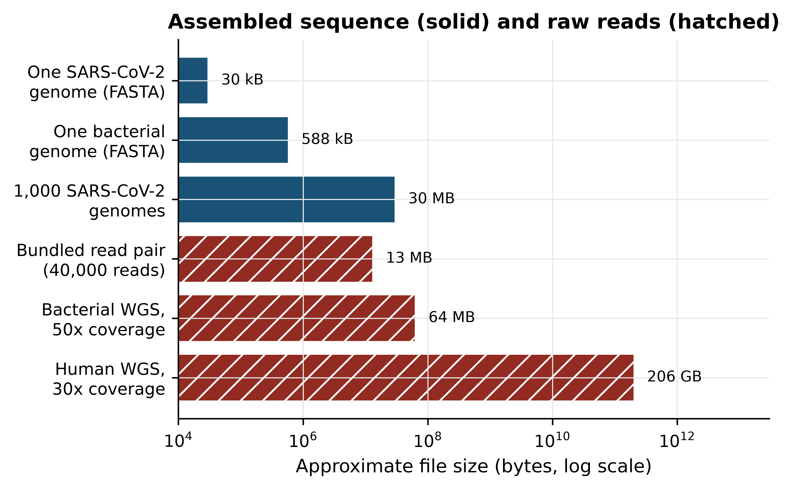
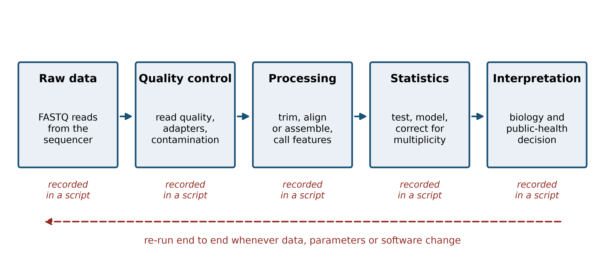
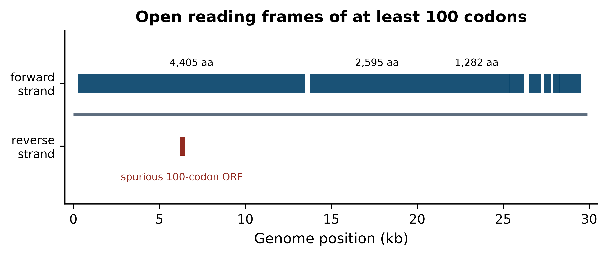

import sys; sys.path.insert(0, "..")
from pybfx import book_data, style, PALETTE
style()1 What bioinformatics is, and how to set up to do it
After working through this chapter you will be able to
- distinguish bioinformatics from computational biology by what each discipline produces
- estimate the size of a sequencing dataset from coverage, read length and genome size, and explain why spreadsheet software cannot hold it
- place the main methodological milestones of the field on a timeline and say which data problem each one answered
- describe the five stages of a sequence analysis and name the decision made at each
- build and verify the software environment used by every example in this book
- compute the length, base composition and open reading frame content of a viral genome, and interpret the result
A clinical microbiologist in Bauchi receives sixty throat swabs during a suspected outbreak. By the end of the week she has sixty FASTQ files, together about ninety gigabytes, and a question her training did not prepare her for: are these sixty samples one outbreak or three unrelated introductions? No microscope answers that. No single piece of software answers it either. What answers it is a sequence of decisions — which reads to discard, which reference to align to, which differences between genomes are real and which are sequencing noise, how many differences are too many to call two samples the same chain of transmission — each of which has to be made deliberately, recorded, and defended when someone asks.
That sequence of decisions is bioinformatics. It is a working practice before it is a body of theory, which is why this book is organised around things you do rather than things you are told. By the end of this chapter you will have a working software environment on your own machine, the book’s data on your disk, and a first completed analysis: the length, base composition and open reading frame content of the SARS-CoV-2 reference genome (data/sequences/sars-cov-2-NC_045512.2.fasta), with an interpretation of what those numbers mean. That analysis takes about ten minutes once the environment is installed, and everything after it in the book is built the same way.
Before the setup, three things are worth settling: what the discipline actually is, why the data forces you to compute rather than to look, and what an analysis looks like from end to end. Those three sections are short, and they exist because readers who skip them tend to produce results they cannot defend six months later.
1.1 What bioinformatics is as a working discipline
A dictionary will tell you that bioinformatics is the application of computational methods to biological data. That is true and nearly useless. A more serviceable description is this: bioinformatics is the practice of turning large, noisy, machine-generated measurements of biological molecules into statements a biologist can act on. Three words in that sentence carry the weight. Large, because the volume removes the option of inspecting the data by eye. Noisy, because every instrument makes errors with its own characteristic signature, and distinguishing instrument from biology is most of the work. Act on, because the output is a claim — this gene is differentially expressed, this variant is pathogenic, these two isolates are related — and someone will make a decision on the strength of it.
The companion term, computational biology, is often used interchangeably, and in job advertisements it usually is. The distinction worth keeping is one of product. A bioinformatician’s product is an answer about a specific dataset: these are the variants in this patient’s exome, this is the phylogeny of these isolates. A computational biologist’s product is a model or a method: a simulation of how a regulatory network behaves, an algorithm that aligns sequences faster, a statistical framework for estimating dispersion in count data. The same person frequently does both in the same week, and the same tools serve both. But the distinction changes what counts as success. A method is successful if it is correct and general; an analysis is successful if it is correct, reproducible and relevant to the sample in front of you. This book teaches the second, and borrows from the first only where a decision depends on knowing how a method works.
The questions the discipline answers fall into a small number of recurring shapes, and recognising the shape is most of knowing how to proceed.
- What is this sequence? Identification by similarity: a contig from a metagenome, an unknown isolate, a gene of unclear function. Answered by alignment and database search (Altschul et al. 1990).
- How do these sequences relate? Evolutionary and epidemiological questions: phylogenies, transmission chains, gene families. Answered by multiple alignment and tree inference.
- What is different between these two groups? Differential analysis: tumour versus normal, treated versus untreated, resistant versus susceptible. Answered by counting, modelling and multiple-testing correction.
- Where are the features in this genome? Annotation: genes, regulatory elements, repeats, resistance determinants. Answered by pattern models trained on known examples.
- What does this variant do? Interpretation: linking a change in sequence to a change in protein, to a phenotype, to a clinical recommendation.
Every chapter of this book sits under one of those five headings. When you meet an unfamiliar dataset, asking which of the five you are facing will usually tell you which chapter to reread.
Bioinformatics, biostatistics and data science
Biostatistics supplies the inference — what counts as evidence, how to correct for testing thousands of genes at once. Data science supplies the engineering — how to move, store and visualise data at scale. Bioinformatics is the part that knows what the measurements mean biologically and what the file formats actually contain. A competent analyst borrows from all three; the chapters on statistics and machine learning in this book are there because you cannot do the third without some of the first two.
1.2 The scale that forces computation
The reason biologists learn to program is arithmetic, not fashion. Work through the numbers for a single, unremarkable experiment: whole-genome sequencing of one human sample at 30-fold coverage with 150 bp paired-end reads.
The human genome is about 3.1 Gb. Thirty-fold coverage means the instrument must produce about 93 gigabases of sequence. At 150 bp per read that is 620 million reads. Each read in a FASTQ file is four lines: an identifier, the bases, a separator and one quality character per base. In the bundled read file used later in this book, those four lines occupy an average of 332 bytes per read, measured directly from the file. Six hundred and twenty million reads at 332 bytes each is about 206 gigabytes of uncompressed text for one sample.
Now consider holding that in a spreadsheet. The most widely used spreadsheet format stops at 1,048,576 rows. The FASTQ file has 2.48 billion lines — roughly 2,400 times the limit, and that is before you have done anything to it. Even if a spreadsheet could load it, the operations you need are not row-by-row arithmetic: they are “align each read to a 3.1 Gb reference allowing mismatches”, “at every position, model the distribution of observed bases given the error profile”, “test 20,000 genes and control the proportion of false discoveries”. None of those is a spreadsheet operation. The scale does not merely make manual work tedious; it makes a different class of method necessary.
Figure 1.1 puts the numbers on one axis so the ratios are visible. Note that it is a logarithmic axis: each gridline is a hundredfold.
import matplotlib.pyplot as plt
BYTES_PER_READ = 332 # measured from data/reads/mgen_sim_R1.fastq.gz
READ_LENGTH = 150
def fastq_bytes(genome_bp, coverage):
"""Uncompressed FASTQ size for one sample at a given fold coverage."""
return genome_bp * coverage / READ_LENGTH * BYTES_PER_READ
labels = ["One SARS-CoV-2\ngenome (FASTA)", "One bacterial\ngenome (FASTA)",
"1,000 SARS-CoV-2\ngenomes", "Bundled read pair\n(40,000 reads)",
"Bacterial WGS,\n50x coverage", "Human WGS,\n30x coverage"]
sizes = [30_429, 588_426, 1_000 * 30_429,
2 * 20_000 * BYTES_PER_READ,
fastq_bytes(580_076, 50), fastq_bytes(3.1e9, 30)]The drawing itself is routine, but the labelling matters: a figure whose axis the reader has to decode is a figure that will be misread.
def human_readable(n_bytes):
for unit, divisor in (("GB", 1e9), ("MB", 1e6), ("kB", 1e3)):
if n_bytes >= divisor:
value = n_bytes / divisor
return f"{value:,.0f} {unit}" if value >= 10 else f"{value:,.1f} {unit}"
return f"{n_bytes:,.0f} B"
fig, ax = plt.subplots(figsize=(6, 3.8))
ax.barh(range(len(sizes)), sizes, color=[PALETTE[0]] * 3 + [PALETTE[3]] * 3,
hatch=[""] * 3 + ["//"] * 3, edgecolor="white")
ax.set_yticks(range(len(sizes))); ax.set_yticklabels(labels)
ax.set_xscale("log"); ax.invert_yaxis(); ax.set_xlim(1e4, 3e13)
#> (10000.0, 30000000000000.0)
ax.set_xlabel("Approximate file size (bytes, log scale)")
for row, value in enumerate(sizes):
ax.text(value * 1.6, row, human_readable(value), va="center", fontsize=8)
ax.set_title("Assembled sequence (solid) and raw reads (hatched)")
fig.tight_layout()
The figure shows the gap that defines the working day. A reference genome is a small file you can open in a text editor. The reads that produced it are four to six orders of magnitude larger. Almost every frustration in practical bioinformatics — disk quotas, jobs that run overnight, pipelines that fail at step seven — comes from that gap, and almost every skill in this book is a way of crossing it without losing track of what you did.
Compression helps, but less than people expect. The bundled read file compresses only 2.2-fold, because its simulated quality strings are close to random and random data does not compress; real instrument data, whose quality values are strongly correlated along the read, typically compresses three- to four-fold. Either way, a 30-fold human genome remains tens of gigabytes after compression, and compressed files must still be decompressed to be read.
Estimate before you download
Before starting any project, do this arithmetic on the back of an envelope: genome size times coverage, divided by read length, times about 330 bytes. If the answer is larger than the free space on your laptop, you need a server, a subsample, or a different plan — and it is far cheaper to discover that now than three hours into a download.
1.3 How the field got here
The history of bioinformatics is best read as a sequence of data problems and the methods invented to meet them. Told that way it stops being a list of dates and becomes an argument about why the tools look the way they do.
The 1960s and 1970s: sequences become comparable. Margaret Dayhoff assembled the first systematic collection of protein sequences and, with it, the first substitution matrices (Dayhoff, Schwartz, and Orcutt 1978) — the insight that an alignment is a statistical statement about evolution, not a visual impression. The formal method arrived with the dynamic programming algorithm for global alignment of two sequences (Needleman and Wunsch 1970), later adapted to find the best local match rather than forcing an end-to-end one (Smith and Waterman 1981). These algorithms are exact and quadratic in time, which made them usable when databases held hundreds of sequences.
The 1980s and 1990s: databases outgrow exact methods. As collections grew, exact alignment against every entry became impossible, and heuristic search took over: first FASTA (Pearson and Lipman 1988), then BLAST (Altschul et al. 1990), which trades a guarantee of optimality for a speed-up of orders of magnitude and remains the most-used tool in biology. Scoring improved in parallel, with substitution matrices derived from alignments of conserved protein blocks. This is the period in which the field’s characteristic bargain was struck: accept an approximation that is almost always right, in exchange for being able to search at all.
2001: the human genome, and the industrialisation of sequencing. The publicly funded consortium (Lander et al. 2001) and a competing private effort (Venter et al. 2001) published draft human genome sequences within days of each other. The draft was not complete — it was a mosaic with gaps in every centromere and most repeat arrays — but it changed the unit of analysis from the gene to the genome, and it made reference-based analysis the default.
The 2000s and 2010s: short reads and the file-format era. Massively parallel sequencing dropped the cost per base by several orders of magnitude and replaced long, accurate Sanger reads with hundreds of millions of short, error-prone ones. That shift produced the formats and tools that occupy most of this book: aligners that index a reference so that millions of reads can be placed against it, the SAM/BAM family for storing alignments and the VCF format for storing variants (Danecek et al. 2021), and quality-control tools to summarise a run before anyone trusts it (Ewels et al. 2016).
2022 and after: completion and pluralisation. Long-read sequencing allowed the first truly complete human genome assembly, closing the gaps the draft had left, including the centromeric satellite arrays (Nurk et al. 2022). Almost immediately the field moved past the idea of a single reference: a draft pangenome representing many individuals replaced one person’s chromosome with a graph of alternatives (Liao et al. 2023), because a single reference systematically mis-serves populations that are not represented in it. In parallel, protein structure prediction moved from a specialist pursuit to a routine step after a neural network began producing models of accuracy comparable to experiment (Jumper et al. 2021), with the predictions themselves distributed as a public database.
Two lessons from that arc are worth carrying into your own work. The first is that methods are answers to data problems, so when the data changes the method usually must change too — short-read tools applied to long reads give poor results, and a human-reference pipeline applied to a bacterium is nonsense. The second is that the field repeatedly discovers that its reference points are provisional. A reference genome, an annotation, a variant classification: all are current best estimates with version numbers, and treating them as fixed truth is one of the commonest sources of irreproducible results.
Who the reference represents
The genomes, annotations and variant frequencies that pipelines rely on were built overwhelmingly from populations of European ancestry. Applying them unexamined to patients from under-represented populations produces more variants of uncertain significance and more misclassifications. Sustained investment in African genomics capacity exists precisely to address this gap (Matovu et al. 2014), and the ethics chapter of this book returns to it. Note the limitation in your methods whenever it applies to your samples.
1.4 The shape of an analysis
Analyses differ in their tools but rarely in their shape. Figure 1.2 shows the five stages, and the point of the figure is the caption underneath each box rather than the boxes themselves: at every stage you make a decision, and the decision must end up in a script.
from matplotlib.patches import FancyBboxPatch, FancyArrowPatch
stages = [("Raw data", "FASTQ reads\nfrom the\nsequencer"),
("Quality control", "read quality,\nadapters,\ncontamination"),
("Processing", "trim, align\nor assemble,\ncall features"),
("Statistics", "test, model,\ncorrect for\nmultiplicity"),
("Interpretation", "biology and\npublic-health\ndecision")]
width, height, gap = 1.8, 1.55, 0.42
span = len(stages) * width + (len(stages) - 1) * gap + 0.4
fig, ax = plt.subplots(figsize=(6.2, 2.9))
ax.set_xlim(0, span); ax.set_ylim(0, 4); ax.axis("off"); ax.grid(False)
#> (0.0, 11.08)
#> (0.0, 4.0)
#> (np.float64(0.0), np.float64(11.08), np.float64(0.0), np.float64(4.0))
for index, (heading, detail) in enumerate(stages):
left = 0.2 + index * (width + gap)
ax.add_patch(FancyBboxPatch((left, 1.6), width, height, boxstyle="round,pad=0.04",
facecolor="#EAF0F5", edgecolor=PALETTE[0], linewidth=1.2))
ax.text(left + width / 2, 2.88, heading, ha="center", fontsize=8, fontweight="bold")
ax.text(left + width / 2, 2.15, detail, ha="center", va="center", fontsize=6.8)
ax.text(left + width / 2, 1.2, "recorded\nin a script", ha="center", va="center",
fontsize=6.5, color=PALETTE[3], style="italic")
if index < len(stages) - 1:
ax.add_patch(FancyArrowPatch((left + width + 0.04, 2.35), (left + width + gap - 0.04, 2.35),
arrowstyle="-|>", mutation_scale=10,
color=PALETTE[0], linewidth=1.2))
ax.add_patch(FancyArrowPatch((span - 0.6, 0.72), (0.6, 0.72), arrowstyle="-|>",
mutation_scale=10, color=PALETTE[3], linewidth=1.1,
linestyle=(0, (4, 2))))
ax.text(span / 2, 0.38, "re-run end to end whenever data, parameters or software change",
ha="center", fontsize=7, color=PALETTE[3])
fig.tight_layout()
Make it concrete with a named example: SARS-CoV-2 genomic surveillance, the analysis that the microbiologist in the opening paragraph needs, and the one that was performed hundreds of thousands of times between 2020 and 2023 (Hu et al. 2020).
Raw data. An amplicon protocol tiles the 30 kb genome with overlapping PCR products, which are then sequenced (Quick et al. 2017). The output is one pair of FASTQ files per sample. Decision: which protocol and primer scheme, because the primer positions must be removed later and the wrong scheme silently leaves primer sequence in your consensus.
Quality control. Read quality is summarised per sample and across the run (Ewels et al. 2016), adapters and low-quality tails are trimmed. Decision: the quality threshold, and what to do with samples whose coverage is too low — including them produces consensus sequences full of ambiguity codes that will distort a phylogeny.
Processing. Reads are aligned to the reference genome, primer sequence is removed, and a consensus genome is called at positions with sufficient depth. Decision: the minimum depth to call a base. Too low and sequencing errors become variants; too high and real genomes become mostly N.
Statistics and inference. Consensus genomes are aligned, a phylogeny is estimated, and each genome is assigned to a named lineage (Rambaut et al. 2020). Decision: how many differences separate two samples before you stop calling them the same transmission chain — a question with an epidemiological answer, not a computational one.
Interpretation. The tree, the lineage assignments and the sample metadata are read together, often in a visualisation designed for the purpose (Hadfield et al. 2017), and reported to the people who will act. Regional surveillance networks in Africa were built on exactly this chain of steps (Tegally et al. 2022). Decision: what to report, how to state the uncertainty, and what not to claim.
Notice that every stage has a decision and that none of the decisions is obviously right. This is why the output of a bioinformatics analysis is not a number but a number plus the record of how it was obtained.
1.5 Why this book insists on scripts, environments and version control
Suppose the microbiologist reports that two of the sixty samples differ by a single nucleotide and therefore represent one transmission event. Six months later a reviewer asks whether that conclusion holds if the minimum depth had been 20 rather than 10. If the analysis was done by clicking through a graphical tool, the honest answer is “I do not know, and finding out means starting again”. If it was done with a script, the answer is a one-line change and a re-run.
That is the entire argument for reproducibility, and it is a practical argument rather than a moral one. The standard statements of the practice (Sandve et al. 2013; Wilson et al. 2017) all reduce to the same three habits, which this book applies from the first chapter.
Everything in a script. A command typed into a terminal and not saved has been lost. Keep an executable file for every step, even when the step is one line. The documents that make up this book are themselves scripts: the prose and the code live in the same file and the figures are regenerated every time it is built, an approach that goes back to the idea of literate programming (Knuth 1984) and that modern tools make routine.
Everything in a pinned environment. Results depend on software versions. An aligner changes a default; a statistical package changes how it estimates dispersion; your numbers move and you cannot say why. The answer is to declare the software your analysis needs in a file, install it from that file, and keep the file with the project. The packaging system this book uses distributes bioinformatics software through a community-maintained channel (Grüning et al. 2018), and the next section uses it to build an environment named pablb containing the exact tools used in every chapter. For multi-step pipelines, workflow managers extend the same principle to the whole analysis (Köster and Rahmann 2012); the project chapter of this book builds one.
Everything under version control. Git records what changed, when and why. Its real value is not backup but the ability to answer “what did the analysis look like when I produced the figure in the paper?”. Initialising a repository on the first day of a project costs about thirty seconds; recovering an un-versioned analysis costs weeks.
Edited spreadsheets destroy evidence
The commonest way to lose a result is to open a table of data, edit a cell, and save. The original is gone, the edit is unrecorded, and nothing downstream can be trusted. Treat raw data files as read-only — on Unix, literally so, with chmod 444 — and write every change as a script that reads the original and produces a new file.
1.6 Setting up your machine
Everything in this book runs on a laptop with 8 GB of memory, on Linux, macOS or Windows with the Windows Subsystem for Linux. The environment is built with the conda package manager, which installs the Python stack, R and Bioconductor, and the command-line tools together, without administrator rights and without interfering with any other software on the machine.
Installing the package manager
Miniforge is a minimal conda installer configured to use the community conda-forge channel by default. Download the installer for your platform from the Miniforge releases page, then run it and restart your shell:
bash Miniforge3-$(uname)-$(uname -m).sh -b -p "$HOME/miniforge3"
"$HOME/miniforge3/bin/conda" init bash
exec bashWindows users should install the Windows Subsystem for Linux first, open an Ubuntu terminal, and then follow the Linux instructions exactly; do not install the Windows version of conda for this book, because several of the command-line tools used in later chapters have no Windows build.
Creating the book’s environment
The book’s repository contains a file called environment.yml that lists every package used anywhere in the sixteen chapters, with the channels they come from. Creating the environment from that file is a single command, and it is the only installation step you need:
git clone https://github.com/babasaraki/practical-bioinformatics.git
cd practical-bioinformatics
conda env create -f environment.yml
conda activate pablbThe download is substantial — the environment includes R, Bioconductor and several compiled aligners — so expect it to take between ten and thirty minutes on a reasonable connection, and do it before you need it rather than during a class. If the solver is slow, conda install -n base conda-libmamba-solver and then conda config --set solver libmamba will speed it up considerably.
Getting the data
Every example in this book runs against files in the data/ directory, and none of them is downloaded while a chapter runs. The script scripts/fetch_data.py downloads each file from its primary archive, derives the simulated read files deterministically, and writes data/MANIFEST.tsv recording the size, SHA-256 checksum and provenance of each one:
python scripts/fetch_data.py # download everything (about 16 MB)
python scripts/fetch_data.py --check # verify what you already haveThe --check form recomputes every checksum and compares it with the manifest. Running it on the machine this book was built on prints:
all files verifiedIf a file is reported as modified, delete it and re-run the download; a silently corrupted input is far worse than a missing one.
Checking the installation
Four commands confirm that the environment is complete. Run them in the activated environment:
python --version
python -c "import Bio, numpy, pandas; print(Bio.__version__, numpy.__version__)"
blastn -version | head -1
seqkit version
samtools --version | head -1On the machine used to build this book these produced:
Python 3.11.17
Biopython 1.88
NumPy 2.4.6
pandas 3.0.6
blastn: 2.17.0+
seqkit v2.14.0
samtools 1.24Your version numbers will differ, and that is expected and harmless provided each command runs. What matters is that none of them reports command not found, which means the environment is not active — run conda activate pablb and try again.
One more command exercises the data and a command-line tool at the same time, and is the quickest single check that everything is wired together:
seqkit stats data/sequences/*.fastafile format type num_seqs sum_len min_len avg_len max_len
data/sequences/TP53-NM_000546.6.fasta FASTA DNA 1 2,512 2,512 2,512 2,512
data/sequences/mycoplasma-genitalium-NC_000908.2.fasta FASTA DNA 1 580,076 580,076 580,076 580,076
data/sequences/sars-cov-2-NC_045512.2.fasta FASTA DNA 1 29,903 29,903 29,903 29,903Starting a project the right way
Finally, put the work under version control before you do any of it:
git init
printf 'data/raw/\n_book/\n*.bam\n' > .gitignore
git add . && git commit -m "Start project with pinned environment"The .gitignore entries matter: large binary files such as BAM alignments should never go into a Git repository, because Git stores a complete copy of every version and the repository will become unusable within a week.
1.7 Your first analysis
With the environment built, here is a complete analysis from file to interpretation. The subject is the SARS-CoV-2 reference genome, isolate Wuhan-Hu-1, accession NC_045512.2, as deposited at the NCBI (Sayers et al. 2021). The Python library used throughout is Biopython (Cock et al. 2009), with Matplotlib (Hunter 2007) underneath every figure.
Start by reading the file and asking the two questions you should ask of any new sequence: how long is it, and what is it made of?
from Bio import SeqIO
from Bio.SeqUtils import gc_fraction
record = SeqIO.read(book_data("sequences", "sars-cov-2-NC_045512.2.fasta"), "fasta")
genome = record.seq
print(f"accession : {record.id}")
#> accession : NC_045512.2
print(f"length : {len(genome):,} bp")
#> length : 29,903 bp
print(f"GC content: {100 * gc_fraction(genome):.2f}%")
#> GC content: 37.97%
for base in "ACGT":
count = genome.count(base)
print(f" {base}: {count:>6,} ({100 * count / len(genome):5.2f}%)")
#> A: 8,954 (29.94%)
#> C: 5,492 (18.37%)
#> G: 5,863 (19.61%)
#> T: 9,594 (32.08%)Both numbers are informative. A length just under 30 kb is at the top of the range for RNA viruses and is characteristic of coronaviruses. A GC content of 38% is low, and it is low in a specific way: the genome is 32% T and 30% A, so more than three-fifths of the sequence is A or T. That composition is a fingerprint. If a contig from a clinical metagenome had come out at 41% GC you would suspect human sequence; at 60% you would suspect a different organism entirely. Composition is the cheapest sanity check in bioinformatics and it costs one line of code.
The next question is whether the genome contains protein-coding potential, and where. A stretch of sequence that begins with a start codon, continues in the same reading frame without a stop codon, and ends at one is an open reading frame (ORF). Because DNA has two strands and each strand has three possible frames, there are six frames to search.
def find_orfs(sequence, min_codons=100):
"""Return (start, end, strand, length_in_codons) for ORFs in all six frames."""
found, length = [], len(sequence)
for strand, working in ((1, sequence), (-1, sequence.reverse_complement())):
for frame in range(3):
# trim to a whole number of codons so translation has no partial codon
usable = working[frame: frame + 3 * ((length - frame) // 3)]
protein = str(usable.translate())
cursor = 0
while (stop := protein.find("*", cursor)) != -1:
first_met = protein.find("M", cursor, stop)
if first_met != -1 and stop - first_met >= min_codons:
left, right = frame + first_met * 3, frame + stop * 3 + 3
if strand == -1: # map back to forward coordinates
left, right = length - right, length - left
found.append((left, right, strand, stop - first_met))
cursor = stop + 1
return sorted(found)
orfs = find_orfs(genome, min_codons=100)
print(f"{len(orfs)} ORFs of at least 100 codons")
#> 9 ORFs of at least 100 codons
for left, right, strand, codons in orfs[:4]:
print(f" {left:>6,}-{right:<6,} strand {strand:+d} {codons:,} codons")
#> 265-13,483 strand +1 4,405 codons
#> 6,186-6,489 strand -1 100 codons
#> 13,767-21,555 strand +1 2,595 codons
#> 21,535-25,384 strand +1 1,282 codonsNine ORFs of at least 100 codons, and the largest is over four thousand codons long. Figure 1.3 shows where they sit.
fig, ax = plt.subplots(figsize=(6, 2.6))
ax.hlines(0, 0, len(genome) / 1000, color="#5D6D7E", linewidth=2)
for left, right, strand, codons in orfs:
row = 0.6 if strand == 1 else -0.6
ax.add_patch(plt.Rectangle((left / 1000, row - 0.18), (right - left) / 1000, 0.36,
facecolor=PALETTE[0] if strand == 1 else PALETTE[3]))
if codons > 1000:
ax.text((left + right) / 2000, row + 0.33, f"{codons:,} aa", ha="center", fontsize=7)
ax.text(6.3, -1.25, "spurious 100-codon ORF", ha="center", fontsize=7, color=PALETTE[3])
ax.set_ylim(-1.7, 1.6); ax.set_xlim(-0.5, 30.5)
#> (-1.7, 1.6)
#> (-0.5, 30.5)
ax.set_yticks([0.6, -0.6]); ax.set_yticklabels(["forward\nstrand", "reverse\nstrand"], fontsize=8)
ax.set_xlabel("Genome position (kb)")
ax.set_title("Open reading frames of at least 100 codons")
ax.grid(False)
fig.tight_layout()
Read the figure as a biologist rather than as a programmer. The forward strand is almost entirely occupied by reading frames, with the first covering roughly the first 13 kb and a second running from about 14 kb to 21 kb; the remaining third of the genome carries a series of shorter frames. That is the architecture of a coronavirus: two very large replicase polyproteins occupying the 5′ two-thirds, followed by the structural and accessory genes, of which the spike protein is the first and largest. The single reverse-strand hit is a reminder that an ORF is a statistical pattern, not a gene: in 30 kb of AT-rich sequence, a run of 100 codons without a stop will occasionally occur by chance.
So the ten-minute analysis has produced a defensible statement: this is a 29,903 bp AT-rich sequence whose coding potential is concentrated on one strand in two very long reading frames followed by several short ones, which is consistent with a coronavirus genome and inconsistent with a host contaminant. Everything in the rest of the book makes statements of that kind, about larger data and with more care, but the shape of the claim does not change.
1.8 How this book is organised
The chapters are grouped into parts that follow the order in which skills become useful. This chapter and the next establish what the field is and what the biology means for the files you will handle. The part that follows covers the databases that supply your data and the sequence alignment methods that interpret it. The toolchain part teaches Unix, Python and R, and is the point at which the book stops being readable without a keyboard. The later parts work through genome annotation, next-generation sequencing and RNA-seq, structures, networks, machine learning, clinical and pathogen applications, and the ethical obligations that come with human genomic data. A capstone project chapter joins them into one analysis.
You do not have to read in order, but two rules make the rest easier. First, do the exercises; the solutions are collapsed beneath each set so you can check yourself rather than read ahead. Second, run every piece of code in the chapter as you meet it rather than afterwards — the code is short precisely so that this is practical, and the understanding that comes from watching a command fail and fixing it is not available any other way.
1.9 Summary
- Bioinformatics is the practice of converting large, noisy, machine-generated measurements into defensible biological statements; computational biology, by contrast, produces methods and models. Judge an analysis by correctness, reproducibility and relevance to the sample in hand.
- Most biological questions take one of five shapes — identification, relatedness, differential comparison, annotation and variant interpretation — and recognising the shape tells you which methods apply.
- The arithmetic of a sequencing run, not preference, is what forces computation: a 30-fold human genome is about 620 million reads and 206 GB of uncompressed FASTQ, some 2,400 times the row limit of a spreadsheet.
- Each methodological era answered a specific data problem: exact alignment for small collections, heuristic search for large databases, reference-based analysis after 2001, short-read tooling in the 2010s, and complete assemblies and pangenomes now.
- Analyses have a common five-stage shape, and every stage contains a decision that must be recorded in a script if the result is to be defensible later.
- Scripts, pinned environments and version control are practical responses to a practical problem: being asked, months later, whether a conclusion survives a change of threshold.
- Base composition is the cheapest diagnostic available: the SARS-CoV-2 reference is 38% GC, and a sequence that should be viral but reads as 41% GC is probably host contamination.
- An open reading frame is a pattern, not a gene. Long frames on one strand indicate coding architecture; isolated short frames arise by chance in AT-rich sequence.
1.10 Exercises
Using the arithmetic in Section 1.2, estimate the uncompressed FASTQ size of a single Mycoplasmoides genitalium sample (genome 580,076 bp) sequenced at 100-fold coverage with 150 bp reads. Would it fit on a USB stick with 4 GB free?
Explain, in two or three sentences each, the difference between the products of bioinformatics and of computational biology, and give an example of a question that belongs to each.
Compute the base composition of the bundled M. genitalium genome (
data/sequences/mycoplasma-genitalium-NC_000908.2.fasta) and compare its GC content with that of SARS-CoV-2. Which of the two would be harder to amplify with a GC-sensitive PCR, and why?Re-run
find_orfson the SARS-CoV-2 genome withmin_codons=50and withmin_codons=300. Record how many ORFs each threshold returns, and explain what the two numbers tell you about using ORF length as evidence of a gene.The nucleocapsid gene of SARS-CoV-2 occupies positions 28,274 to 29,533 in the standard 1-based numbering used by GenBank. Extract it, confirm that it starts with a start codon and ends with a stop codon, and compute its GC content.
A colleague sends you a 1.2 Mb contig assembled from a clinical sample, claiming it is a novel coronavirus. Its GC content is 52%. Without running any further analysis, state two reasons to doubt the claim.
Write a function that takes a FASTA path and returns a dictionary of sequence identifier to GC content, and run it on
data/proteins/globins.fasta. The function should raise a clear error rather than return nonsense if the file contains protein rather than nucleotide sequence.Write out, as a numbered list of five steps, what you would do to make an analysis you completed last year reproducible by a colleague who has only your result file. State which step you think is most often skipped.
1.11 Solutions
Solutions
1. 580,076 × 100 ÷ 150 × 332 bytes ≈ 128 MB, so it fits on the USB stick about thirty times over. Bacterial sequencing is comfortable on a laptop; human sequencing is not.
genome_bp, coverage = 580_076, 100
reads = genome_bp * coverage / READ_LENGTH
print(f"{reads:,.0f} reads, {reads * BYTES_PER_READ / 1e6:,.0f} MB uncompressed")
#> 386,717 reads, 128 MB uncompressed2. Bioinformatics produces an answer about a particular dataset — for example, “which of these sixty isolates share a transmission chain?” — and is judged on whether that answer is correct, reproducible and relevant to those samples. Computational biology produces a method or model — for example, “an algorithm that estimates transmission trees from genomic and epidemiological data” — and is judged on whether it is correct in general. The same person often does both, but the standard of success differs.
3. M. genitalium is markedly more AT-rich than SARS-CoV-2. A GC content near 32% means AT-rich primer binding sites and low-melting-temperature templates, so this genome is the more awkward of the two for a GC-sensitive protocol; extremes of composition in either direction cause amplification bias.
mgen = SeqIO.read(book_data("sequences", "mycoplasma-genitalium-NC_000908.2.fasta"), "fasta")
for label, sequence in (("M. genitalium", mgen.seq), ("SARS-CoV-2", genome)):
print(f"{label:<15} {len(sequence):>8,} bp GC {100 * gc_fraction(sequence):.2f}%")
#> M. genitalium 580,076 bp GC 31.69%
#> SARS-CoV-2 29,903 bp GC 37.97%4. The low threshold returns far more frames, nearly all of them chance arrangements; the high threshold returns only the longest genes and misses every short one. ORF length alone is weak evidence: it must be combined with codon usage, similarity to known proteins, or ribosome profiling data before a frame is called a gene.
for threshold in (50, 100, 300):
print(f"min_codons={threshold:>3}: {len(find_orfs(genome, threshold)):>3} ORFs")
#> min_codons= 50: 47 ORFs
#> min_codons=100: 9 ORFs
#> min_codons=300: 4 ORFs5. The gene is 1,260 bp, begins ATG and ends with a stop codon. Its GC content is about nine percentage points above the genome-wide value, which is a reminder that a whole-genome average hides substantial local variation and that compositional checks should be made on windows rather than on whole sequences. Note the subtraction of one from the start coordinate: GenBank counts from 1 and includes both ends, whereas Python counts from 0 and excludes the end. The next chapter treats this conversion in detail.
n_gene = genome[28274 - 1:29533]
print(f"length {len(n_gene):,} bp, starts {n_gene[:3]}, ends {n_gene[-3:]}")
#> length 1,260 bp, starts ATG, ends TAA
print(f"translates to {n_gene.translate()[:5]}... ending {n_gene.translate()[-1]}")
#> translates to MSDNG... ending *
print(f"GC {100 * gc_fraction(n_gene):.2f}% versus {100 * gc_fraction(genome):.2f}% genome-wide")
#> GC 47.22% versus 37.97% genome-wide6. First, the length is wrong: coronavirus genomes are about 30 kb, and 1.2 Mb is forty times too long for any known member of the family. Second, the composition is wrong: coronaviruses are AT-rich, near 38% GC, and 52% is well outside that range. Both observations point to a bacterial contig rather than a virus, and both cost nothing to check.
7. The guard matters: gc_fraction will happily return a number for a protein sequence, because G and C are also amino acid codes, and the number will be meaningless.
def gc_by_record(fasta_path):
"""Map each sequence identifier in a nucleotide FASTA file to its GC percentage."""
results = {}
for entry in SeqIO.parse(fasta_path, "fasta"):
letters = set(str(entry.seq).upper())
if not letters <= set("ACGTUN"):
raise ValueError(f"{entry.id} is not a nucleotide sequence")
results[entry.id] = 100 * gc_fraction(entry.seq)
return results
try:
gc_by_record(book_data("proteins", "globins.fasta"))
except ValueError as problem:
print(f"rejected as expected: {problem}")
#> rejected as expected: sp|P69905|HBA_HUMAN is not a nucleotide sequence
print(gc_by_record(book_data("sequences", "sars-cov-2-NC_045512.2.fasta")))
#> {'NC_045512.2': 37.97277865097147}8. A defensible list: (i) recover the raw data and record where it came from, with checksums; (ii) write every processing step as a script, replacing any manual editing; (iii) declare the software in an environment file and rebuild the environment from it; (iv) put the scripts, the environment file and the documentation in a version-controlled repository; (v) re-run the whole thing from raw data on a different machine and check that the result matches. Step (v) is the one most often skipped, and it is the only one that actually tests the other four.
1.12 Further reading
- Wilson et al. (2017) is the most useful single paper for a new computational researcher: it describes file organisation, scripting and collaboration habits that cost little and prevent most disasters.
- Sandve et al. (2013) states the reproducibility problem in ten rules short enough to pin above a desk; read it before your first manuscript rather than after.
-
Cock et al. (2009) is the Biopython reference. Its accompanying tutorial is the fastest route to competence with
SeqIO,Seqand the alignment modules used throughout this book. -
Grüning et al. (2018) explains the packaging infrastructure behind the
environment.ymlfile you built in Section 1.6, and is worth reading when a package will not install. - Lander et al. (2001) and Nurk et al. (2022) are best read together: the draft human genome and the first complete one, twenty-one years apart, show exactly what changed and what did not.
- Liao et al. (2023) presents the pangenome that is replacing the single human reference, and explains why one reference was never adequate for a species.
- Sayers et al. (2021) describes the NCBI resources that supply most of the data in this book, and is the reference to cite when you obtain sequences from GenBank.
- Hu et al. (2020) provides the virological background to the SARS-CoV-2 examples used here and in the chapters on annotation and pathogen genomics.